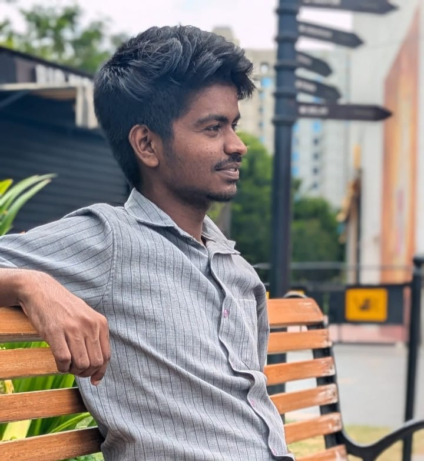
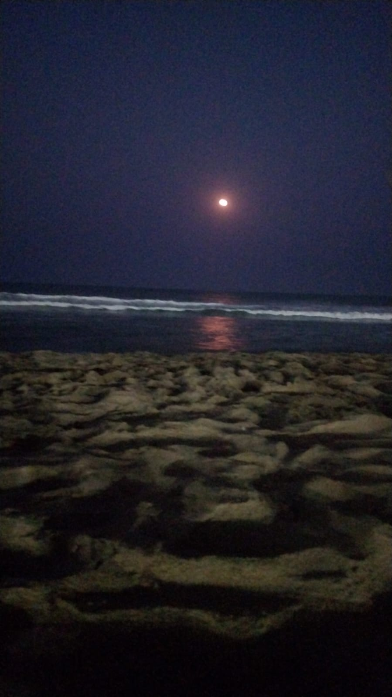
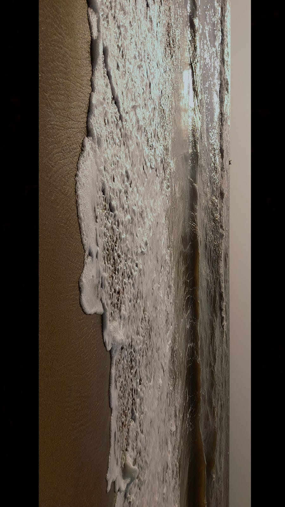

There are two versions of me. One speaks in circuits, control systems and code. The other speaks in open roads, early mornings and the quiet click of a camera shutter. Both are equally me. And somehow, they make each other better.

Rittu Ronald // Beyond the BlueprintI'm a traveller at heart. Not the kind who ticks destinations off a list or chases the perfect photograph - but the kind who sits in a roadside tea stall in an unknown town, watches the world move at its own pace, and feels something quietly shift inside. I don't travel to escape my life. I travel because every new place hands me a slightly different version of myself to bring back home. Every winding road, every strange skyline, every meal eaten alone at a table for one - they all add up to something I can't quite name but wouldn't trade for anything.
I romanticize the journey. The long bus rides with fogged windows. The towns that don't appear on popular maps. The feeling of being completely unknown somewhere and finding that oddly freeing. There is something deeply humbling about stepping into a place where nobody knows your name, your degree, or your ambitions and realizing that you are still whole.

Mobile Photography // Moon CaptureI carry my phone like most engineers carry a notebook - always ready to catch what the eye almost missed. I'm a mobile photographer, drawn to the quiet moments that happen between the loud ones. The way light falls on an old wall at 6pm. A stranger laughing at something just out of frame. The reflection of a city in a puddle after rain. I don't shoot to impress - I shoot to remember. Photography taught me something engineering never quite could - that sometimes the most important thing isn't fixing what's in front of you but truly seeing it first.
I run in the mornings - before the notifications, before the noise, before the world has decided what kind of day it's going to be. The road at that hour belongs to almost no one, and for a little while, it belongs entirely to me. It's not about pace or distance. It's about showing up for yourself before anyone else asks you to show up for them. Some of my clearest thinking happens in those early miles - problems untangle themselves, ideas arrive uninvited, and the sky puts on a show that no screen could ever replicate.

Mobile Photography // Sea HorizonAnd then there are books. I read slowly and deliberately - not to finish, but to feel. I've learned more about patience from a novel than from any textbook, more about systems thinking from a biography than any lecture. Books have a way of sitting with you long after you've closed them, quietly rearranging the furniture inside your mind. I believe a person who reads widely thinks differently - more layered, more empathetic, more willing to sit with complexity rather than rush toward a simple answer.
What ties all of this together - the travel, the running, the reading, the photography - is curiosity. The same restlessness that makes me want to understand how a system fails before it actually does is the same one that makes me want to take the longer route home, raise my phone to catch a fleeting light, start a book I know nothing about, or wake up early just to see what the morning looks like from a different street.
Engineering taught me how to solve problems. Travel taught me which problems are worth solving. Running taught me discipline without rigidity. Photography taught me how to see before I act. And books taught me that every answer opens three new questions and that's not a problem. That's the whole point.
I am, at my core, someone who believes that a life fully lived and a career fully pursued are not two separate things. They feed each other. They sharpen each other. And the best version of my work has always come from the best version of my living.